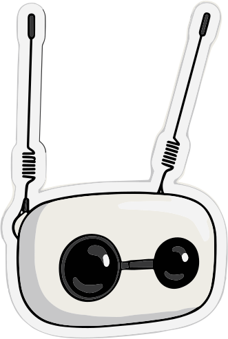

Ask your Drupal site how it's doing.
Dreachy turns a Reachy Mini into the voice and body of one Drupal site. It answers in the first person, reads its own articles aloud, and looks up when an editor publishes.
MIT licensed · works with any Drupal site that exposes JSON:API or Drupal's MCP server

youWhat's new?
DreachyThree things since yesterday. The carrots piece went up an hour ago — want me to read it?
Nothing to install in Drupal.
Out of the box, Dreachy reads your site the way any decoupled front end would, then hands what it finds to the robot's own voice and movement.
-
It reads your site
Core JSON:API with anonymous read access is enough: it works out your content types, and which fields to read aloud, from the site itself. A private site can give it a login, and a site running Drupal's MCP server can be searched by meaning.
-
You ask, it answers
Seven tools stand behind the conversation: what's new, search, read aloud, site pulse and keep watch — and, once it's logged in, what's waiting to be published and a note you dictate, saved as a draft.
-
It keeps watching
Left watching, it polls quietly. When something is published it doesn't announce it — the antennas flare and the head lifts.
- Your Drupal sitearticles, pages, recipes
- JSON:API or MCPread, or logged in
- Dreachyseven tools + a persona, on the robot
- Speech and movementReachy Mini
What you can ask
Seven tools, phrased the way you'd actually say them out loud.
youWhat's new on the site?
DreachyThe latest content, newest first, with how long ago each one went up.
youDo we have anything on mushrooms?
DreachyA search across the site — by keyword, or by meaning through Drupal's MCP server — and an honest "nothing yet" when there isn't.
youRead me the carrots article.
DreachyThe whole piece, aloud, in natural chunks rather than one breathless block.
youHow are you feeling?
DreachyIts pulse: how much has been published lately, and how quiet or busy that makes it.
youWhat's waiting to be published?
DreachyWith its login: how many drafts are waiting, in which states, and the latest few by name.
youTake a note: the park bench needs painting.
DreachyIt reads it back and asks "shall I save it as a draft?" Nothing is saved without your yes, and nothing is ever published.
youKeep an eye on things.
DreachyIt watches in the background. When something is published, it doesn't announce it — the antennas flare and the head lifts.
Set it up
-
Point it at a site it can reach
Any Drupal site with JSON:API on and anonymous read access, with any content model. It has to be reachable from the robot, so a local development URL won't do. For a private site, drafts and notes, or search by meaning through Drupal's MCP server, see the setup guide.
-
Install from the robot's dashboard
Search the app store for Dreachy. Or install it by hand:
pip install git+https://github.com/VincenzoGambino/dreachy -
Give it the site URL
Open Dreachy's settings page from the dashboard and enter the site URL, plus the language prefix if the site is multilingual. The site login and MCP mode are under Advanced. It takes effect immediately, and there's no SSH involved. Then say hello.
Fork it — it's meant to be a starting point
Every tool is one file that asks the site a question and hands back an answer. Copy one, change the query, and the robot can do something new. The test suite runs with no robot and no live site, so you can work on it from a laptop on a train.
What it knows about a site — content types, and which fields to read aloud — it learns from the site itself. Behind every tool sits one small interface, so the same tools run over JSON:API or Drupal's MCP server.
dreachy/
├─ main.py the whole wrapper
├─ backend.py what any site must answer
├─ client.py … over JSON:API
├─ mcp_backend.py … over Drupal's MCP server
├─ schema.py the site's content types
├─ profile/dreachy/ who it thinks it is
└─ tools/
├─ drupal_whats_new.py
├─ drupal_find_content.py
├─ drupal_read_article.py
├─ drupal_site_pulse.py
├─ drupal_watch_site.py
├─ drupal_pending_content.py
├─ drupal_create_note.py
└─ drupal_site_action.py
$ uv run pytest
351 passed